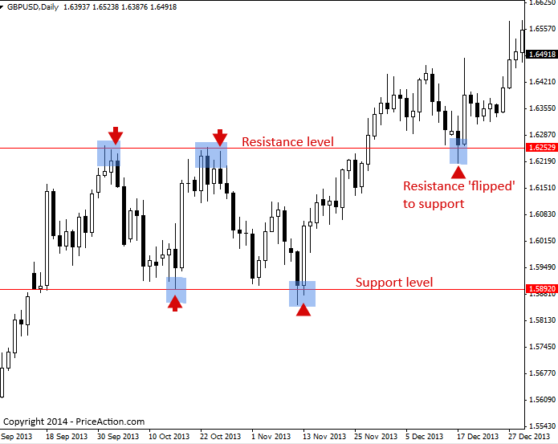
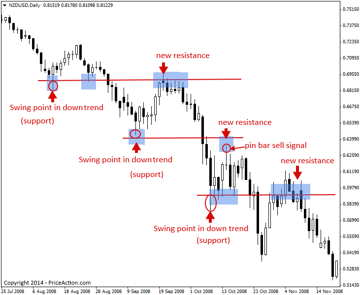
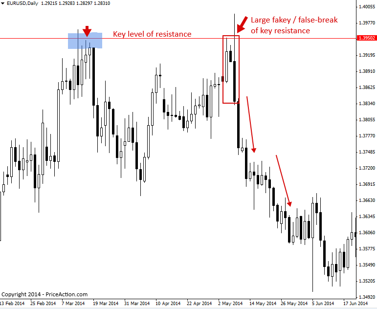
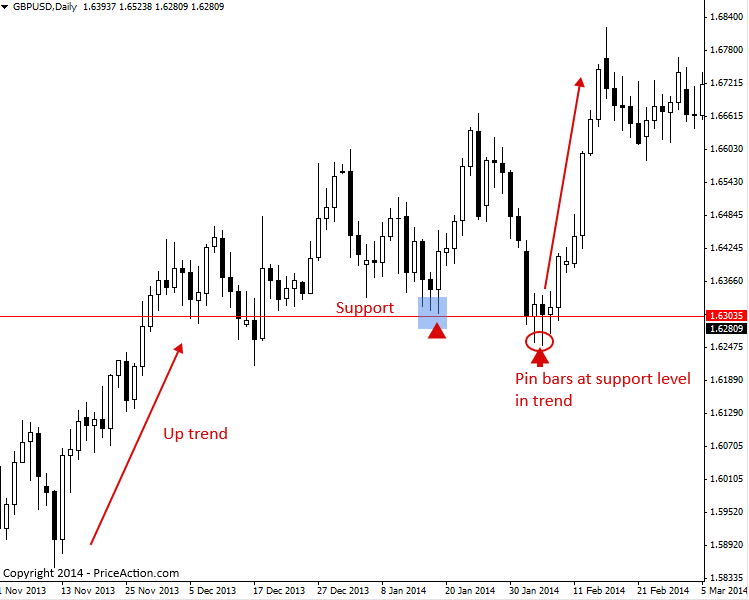
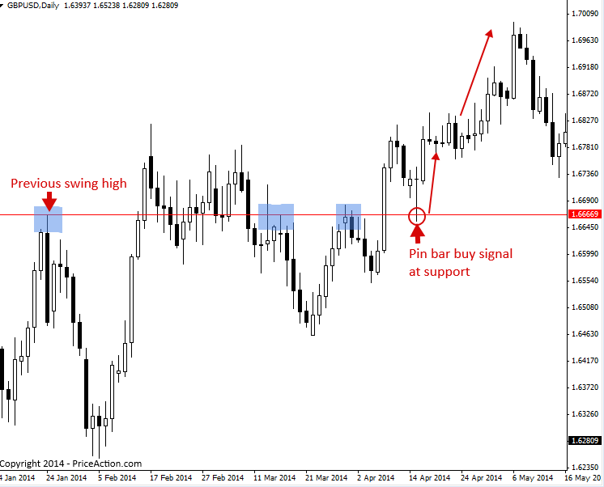
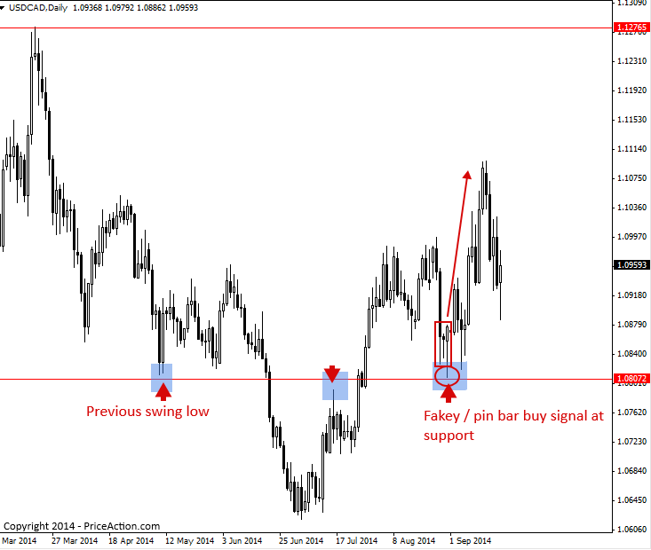

Support and Resistance Levels Trading Strategy
지지선과 저항선이란 무엇인가?
지지선과 저항선은 일반적으로 가격 막대의 고점과 다른 가격 막대의 고점, 또는 저점과 저점을 연결하여 가격 차트에서 수평 수준을 형성하는 수평적 가격 수준입니다.
지지선 또는 저항선은 시장의 Price Action이 반전되고 방향이 바뀌면서 시장에 정점이나 저점(스윙 포인트)을 남길 때 형성됩니다. 지지선과 저항선은 아래 차트에서 볼 수 있듯이 거래 범위를 형성할 수 있으며, 추세 시장에서도 시장이 조정을 거치면서 스윙 포인트를 남길 때 이러한 현상이 나타납니다.
가격은 종종 이러한 지지선과 저항선을 따릅니다. 즉, 가격이 이를 돌파할 때까지 Price Action이 억제되는 경향이 있습니다.
아래 차트에서는 거래 범위 내에 가격이 포함된 지지선과 저항선의 예를 볼 수 있습니다. 거래 범위는 아래에서 볼 수 있듯이 평행한 지지선과 저항선 사이에 포함된 가격 영역입니다(거래 범위 내에서 가격은 지지선과 저항선 사이에서 변동합니다).
아래 차트에서 가격은 결국 거래 범위를 벗어나 저항 수준 위로 이동한 다음 다시 하락하여 이전 저항 수준을 테스트한 후 가격을 유지하고 지지선 역할을 했습니다.

시장에서 지지선과 저항선이 생성되는 또 다른 주요 방법은 추세의 변동점을 이용하는 것입니다.
시장 추세에 따라 추세를 되돌리는 현상이 발생하고, 이러한 되돌림은 시장에 '스윙 포인트'를 남깁니다. 상승 추세에서는 정점처럼 보이고 하락 추세에서는 저점처럼 보입니다.
상승 추세에서는 가격이 고점을 돌파한 후 이전 고점들이 지지선 역할을 한 후, 다시 하락하여 테스트하는 경향이 있습니다. 하락 추세에서는 반대로, 가격이 고점을 돌파한 후 이전 저점들이 저항선 역할을 한 후, 다시 상승하여 테스트하는 경향이 있습니다.
하락 추세에서 시장이 이전 스윙 포인트(지지선)를 테스트하는 예시를 보여드리겠습니다. 시장이 이전 지지선을 테스트하기 위해 다시 상승할 때, 해당 레벨은 '새로운' 저항선 역할을 하며 가격이 유지되는 경우가 많습니다. 시장이 상승하여 이전 스윙 포인트(아래 차트의 핀 바 매도 신호 참조)를 테스트할 때, 추세 진입 시점을 찾는 것이 현명합니다. 이 레벨에서 추세가 재개될 가능성이 가장 높기 때문에 저위험/고수익 잠재력을 제공합니다.

지지 및 저항 수준에서 Price Action 신호를 거래하는 방법
지지선과 저항선은 Price Action 트레이더의 '최고의 친구'입니다. Price Action 진입 신호가 주요 지지선 또는 저항선 에서 형성되면 진입 가능성이 매우 높습니다. 주요 지지선은 손절매를 위한 '장벽'을 제공하며, 시장의 전환점이 될 가능성이 높기 때문에 일반적으로 시장의 주요 지지선과 저항선에서 좋은 위험 대비 수익률(RRP)이 형성됩니다.
핀 바 신호나 기타 신호 와 같은 Price Action 진입 신호는 가격이 실제로 주요 지지 또는 저항 수준에서 벗어날 수 있다는 것을 '확인'해 줍니다.
아래 예시 차트에서는 주요 저항선과 이를 기반으로 형성된 약세 형 페이키 전략을 확인할 수 있습니다 . 이 페이키 전략은 매우 공격적인 반전과 주요 저항선의 허위 돌파를 보였기 때문에, 해당 신호 이후 가격이 계속 하락할 가능성이 높았습니다.

다음 예시 차트는 상승 추세에서 지지선에서 Price Action을 매매하는 방법을 보여줍니다. 명확한 핀바 매수 신호(이 경우 두 개의 핀바 신호)가 나타나면서 상승 추세가 재개될 준비가 되었고, 주요 지지선에서 상당히 상승했습니다.

다음 차트 예시는 추세 시장에서 이전 스윙 레벨이 새로운 지지 또는 저항 레벨로 작용하여 Price Action 진입 신호에 대한 주의를 집중할 수 있는 좋은 레벨을 제공하는 경우가 있음을 보여줍니다.
이 경우, 추세는 상승 중이었고, 상승 추세의 이전 고점은 가격이 지지선 위로 돌파한 후 결국 지지선으로 '반전'되었습니다. 가격이 두 번째로 해당 지지선을 재테스트했을 때, 이는 매수 후 시장 합류선 에서 상승 추세로 재진입할 수 있는 좋은 핀바 진입 신호가 되었음을 알 수 있습니다.

마지막으로 살펴볼 마지막 차트는 흥미로운 차트입니다. 차트 왼쪽의 하락 추세에서 발생한 스윙 저점을 주목해 보세요. 이 저점이 몇 달 후에도, 추세가 하락에서 상승으로 전환된 후에도 어떻게 유지되었는지 확인할 수 있습니다. 가격이 이 저점을 돌파한 후 처음에는 저항선 역할을 했지만, 이 저항선이 돌파되자 상승 추세가 형성되었고, 그 후 같은 저점이 지지선 역할을 했습니다. 아래 차트에서 가짜 핀바 콤보 신호를 확인할 수 있는 지점입니다.

지지선과 저항선에 대한 팁
- 차트에 모든 작은 레벨을 그리려고 너무 애쓰지 마세요. 위의 예시에서 보여드린 것처럼, 가장 중요한 일일 차트 레벨을 찾는 것을 목표로 하세요. 이러한 레벨들이 가장 중요하기 때문입니다.
- 수평선을 그려 지지선이나 저항선을 연결하더라도, 그 선이 연결하는 막대의 '정확한' 고점이나 저점에 항상 닿는 것은 아닙니다. 때로는 선이 고점에서 약간 낮게 또는 저점에서 약간 높게 연결되는 막대들을 연결해도 괜찮습니다. 중요한 것은 이것이 정확한 과학이 아니라, 훈련, 경험, 그리고 시간을 통해 향상될 수 있는 기술이자 예술이라는 것입니다.
- 특정 Price Action 진입 신호를 포착해야 할지 확신이 서지 않을 때는 해당 신호가 주요 지지선이나 저항선에 있는지 자문해 보세요. 주요 지지선이나 저항선에 있지 않다면 신호를 무시하는 것이 더 나을 수 있습니다.
- 핀바, 페이키, 인사이드 바 전략과 같은 가격 거래 전략은 시장의 지지 또는 저항 수준이 합류하는 곳에서 형성될 경우 성공할 확률이 훨씬 더 높습니다.
https://priceaction.com/price-action-university/strategies/support-resistance-levels/